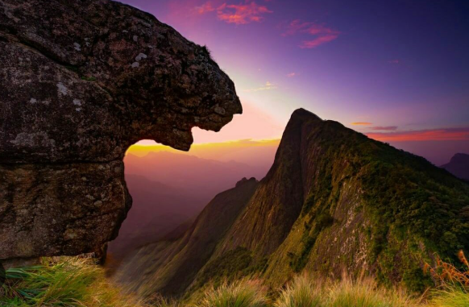
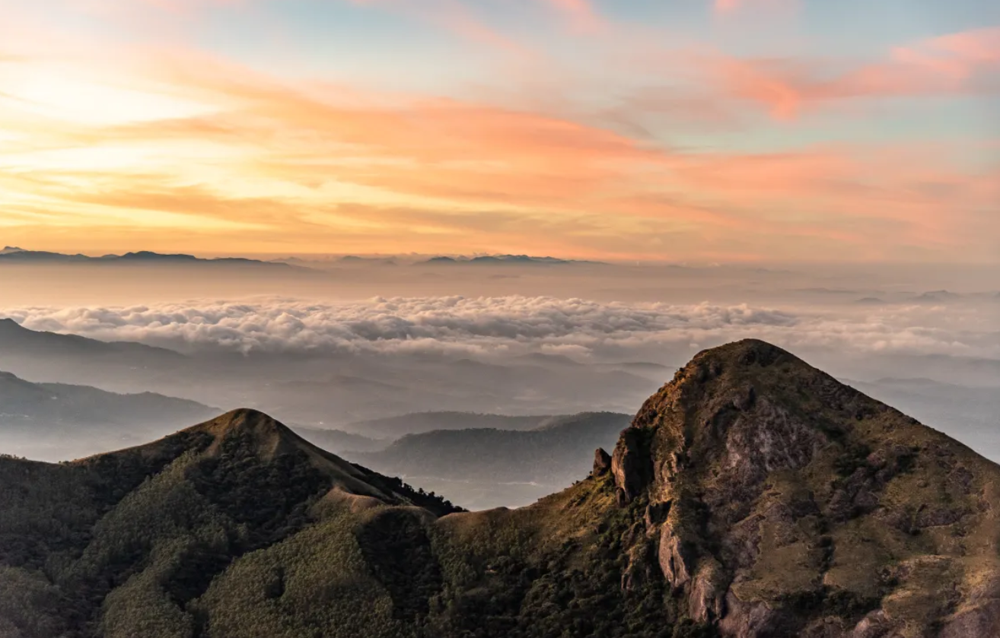
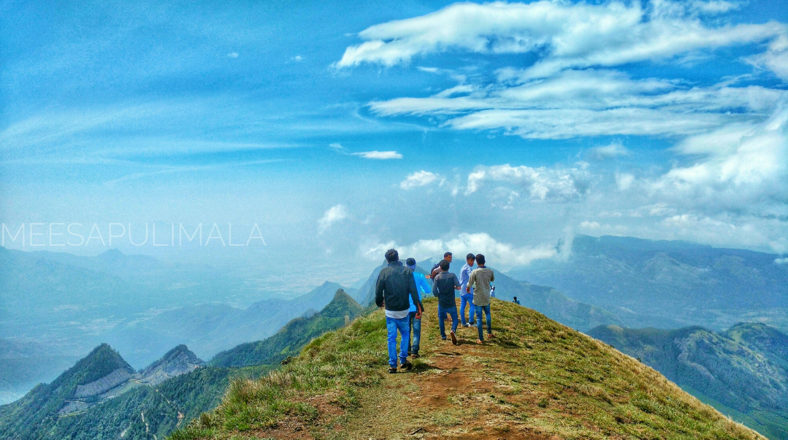
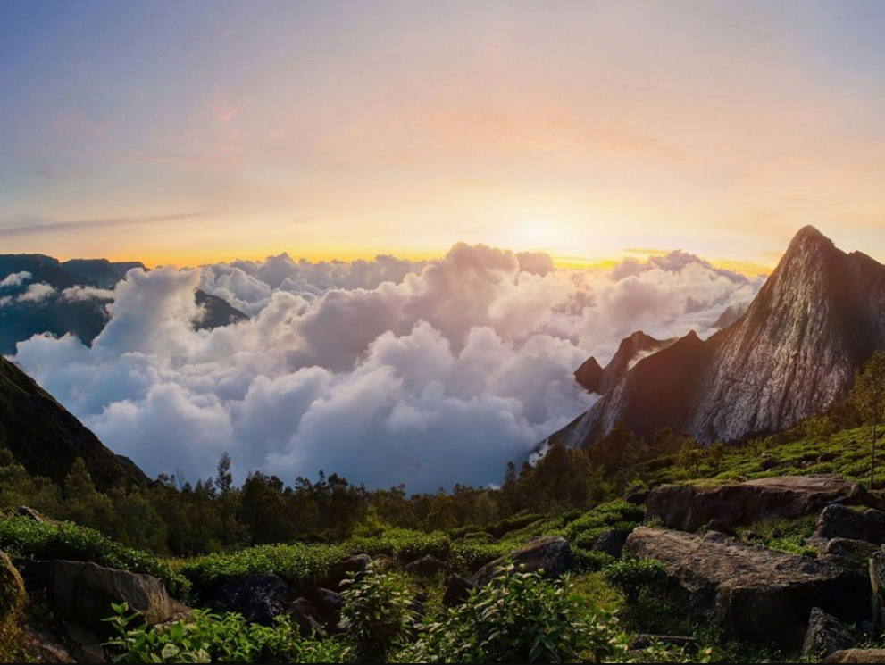
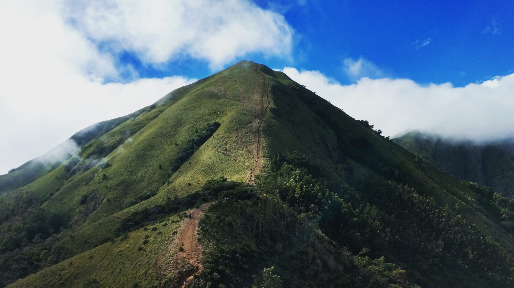

Meeshapulimala is one of the highest peaks in Kerala, located in the Idukki district near Munnar. It is known for its beautiful mountain ranges, misty atmosphere, and trekking opportunities. The peak gets its name from its shape, which looks like a tiger’s moustache. Surrounded by green hills, grasslands, and clouds, it offers breathtaking views to visitors. Meeshapulimala is a popular destination for adventure lovers and nature enthusiasts who enjoy trekking and exploring scenic landscapes.





Meesapulimala is the second highest peak in the Western Ghats of Kerala, located in Idukki District near Munnar. It stands at an altitude of about 2,640 metres above sea level. The peak is famous for its mist-covered hills, grasslands, trekking trails and breathtaking sunrise views.
The name "Meesapulimala" comes from the Malayalam words "Meesa" (moustache), "Puli" (tiger) and "Mala" (hill). The shape of the mountain is believed to resemble the face of a tiger with a moustache.
Meesapulimala has long been part of the Western Ghats ecosystem. It became a popular trekking destination because of its rich biodiversity, scenic landscapes and cool climate. Today, it is one of Kerala's leading eco-tourism destinations.
Meesapulimala is one of Kerala's best trekking destinations. Visitors trek through tea plantations, grasslands, forests and mountain ridges while enjoying spectacular views of the Western Ghats and nearby valleys.
The hills are covered with grasslands, shola forests, medicinal plants and many rare flowering plants. During the blooming season, the famous Neelakurinji flowers add great beauty to the landscape.
Today, Meesapulimala is one of